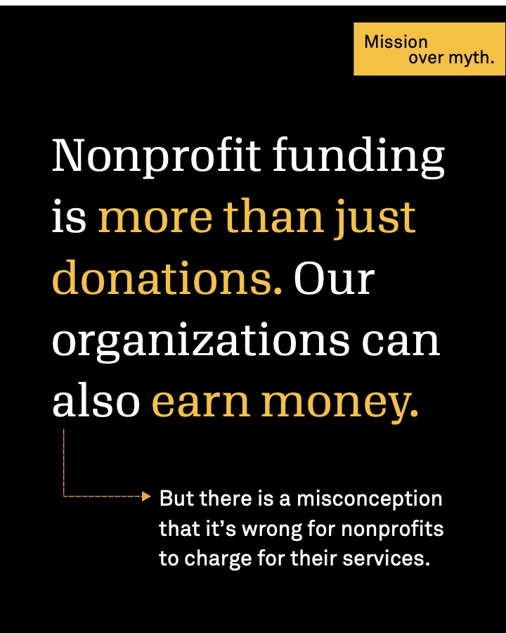
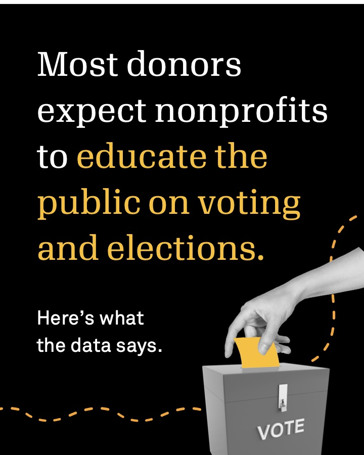
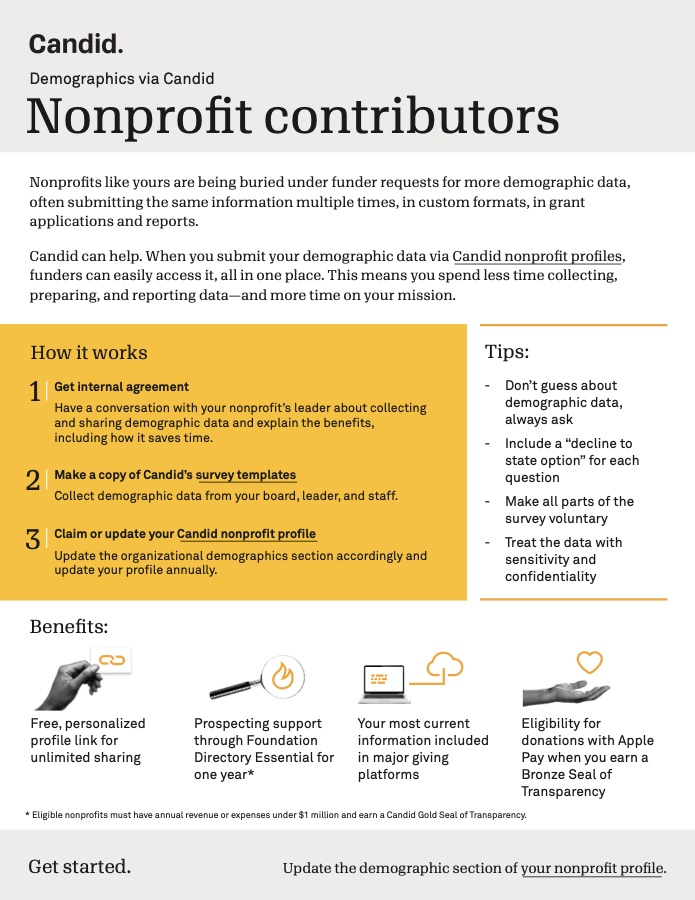
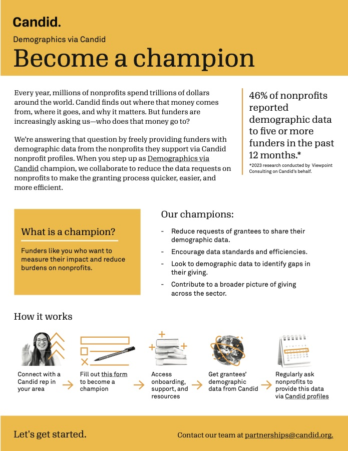

Setting the record straight on nonprofit funding
Why stale financials make donors suspicious, plus a featured chart on how revenue mix differs between large and small nonprofits.
Portfolio
Most of my work starts with Candid research, such as compensation benchmarks, funding data, or a donor survey, and ends up as a blog post, an email, or a social carousel. Below are examples from each channel.
Writing
Benchmark data for staff and executive pay, plus trends like top-earning program areas and whose salaries are rising or falling.
Read the post ↗ Report launch · Candid blogA first look at the most complete source of nonprofit compensation data, built on executive salaries from Form 990 filings.
Read the post ↗ How-to · Candid blogA practical guide to planning and launching a campaign that gets the word out about mission-driven work.
Read the post ↗Social media

A myth-vs-fact series on earned income, which makes up over 70% of nonprofit revenue. It ends with what nonprofits should and shouldn't do about the myth.
View PDF ↗
Results from a 2026 M+R donor survey, one finding per slide, followed by ways nonprofits can support voter education.
View PDF ↗Campaign collateral

Shows nonprofits how to share demographic data once, through their Candid profile, instead of filling out the same request for every funder.
View PDF ↗
The version of the same campaign for funders. The campaign recruited nearly 200 partners.
View PDF ↗I owned strategy, content, segmentation, testing, and deployment for Candid's biweekly newsletter to over 500,000 subscribers, reaching a 40% open rate and doubling click-through from 1% to 2%. Each issue opened with a note from a Candid leader, then a featured chart and a few short stories. Two recent issues:
Why stale financials make donors suspicious, plus a featured chart on how revenue mix differs between large and small nonprofits.
Why keeping current funders pays off more than chasing new ones, with a chart showing Gen Z gave at a higher rate than any other generation.